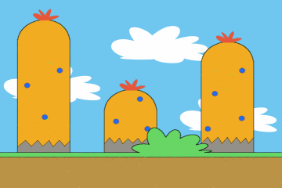

Praticamente todo jogo em 2D com visão lateral, seja o Super Mario Bros ou Mortal Kombat, possui um cenário de fundo. Este cenário não é estático, pois precisa dar a impressão de que realmente existe algo “vivo” no fundo do jogo, e que complementa a fase.
Para que o fundo mude de acordo com a movimentação do personagem, utilizando a técnica chamada de Parallax Scrolling, que consiste em movimentar a imagem do fundo de acordo com a movimentação do personagem, porém mais lento para dar a impressão de profundidade. Um dos detalhes mais interessantes do Parallax Scrolling é que quando mais imagens com velocidade de movimento diferente houverem no fundo da fase, maior será a sensação de profundidade.
O exemplo abaixo é um pseudo-código baseado na cocos2d-x que mostra como podemos implementar esta técnica, utilizando três imagens diferentes (podem ser várias imagens, depende da profundidade e detalhes que você quer):


Iniciamos as variáveis com cada imagem. Devemos ter atenção na hora de adicionar as imagens, pois na cocos2d essa ordem influência na ordem que a imagem será desenhada na tela. Neste caso queremos o pSky atrás, e as demais imagens na sua frente.
CCSprite* pSky = CCSprite::create("sky.png"); this->addChild(pSky, 0); CCSprite* pMountain = CCSprite::create("mountain.png"); this->addChild(pMountain, 0); CCSprite* pGround = CCSprite::create("ground.png"); this->addChild(pGround, 0);
Depois de inicializar e posicionar as imagens nos lugares corretos (com o setPosition()), vem a parte da movimentação. Vamos imaginar que temos duas variáveis que nos dizem para qual lado o jogador está se movimentando, assim vamos fazer o Parallax ir para o lado correto. Também vamos imaginar que já existe uma variável com o sprite do jogadar inicializada.
void update(float dt) { if (pPlayerMoveRight) { pSky->setPosition(ccp(pSky->getPosition().x + (1.0f * dt), pSky->getPosition().y)); pMountain->setPosition(ccp(pMountain->getPosition().x + (10.0f * dt), pMountain->getPosition().y)); pGround->setPosition(ccp(pGround->getPosition().x + (100.0f * dt), pGround->getPosition().y)); pPlayer->setPosition(ccp(pPlayer->getPosition().x + (100.0f * dt), pPlayer->getPosition().y)); } else if (pPlayerMoveLeft) { pSky->setPosition(ccp(pSky->getPosition().x + (-1.0f * dt), pSky->getPosition().y)); pMountain->setPosition(ccp(pMountain->getPosition().x + (-10.0f * dt), pMountain->getPosition().y)); pGround->setPosition(ccp(pGround->getPosition().x + (-100.0f * dt), pGround->getPosition().y)); pPlayer->setPosition(ccp(pPlayer->getPosition().x + (-100.0f * dt), pPlayer->getPosition().y)); } }
Repare que o valor da movimentação do pSky é bem menor do que os demais. Isso influencia na velocidade do movimento, pois o que está mais afastado deve se mover mais lentamente para dar a impressão de profundidade. O resultado é que o céu irá se movimentar bem devagar, pois está mais longe, depois a montanha irá se movimentar um pouco mais rápido, mas ainda lenta por estar longe também, e o chão irá se movimentar na mesma velocidade que o jogador.

Esta técnica pode ser utilizada em praticamente qualquer jogo 2D com visão lateral, seja de aventura, corrida, luta, ou qualquer outro estilo. Alguns jogos com visão lateral e gráficos 3D (o que chamamos também de 2.5D) utilizam essa técnica com modelos ao invés de imagens, o que aumenta a profundidade. Um exemplo é o Trine, que possui jogabilidade 2D com gráficos 3D, e podemos ver claramente o Parallax feito com modelos 3D no video abaixo.
Mais informações sobre o Parallax Scrolling e fonte das imagens na Wikipedia.